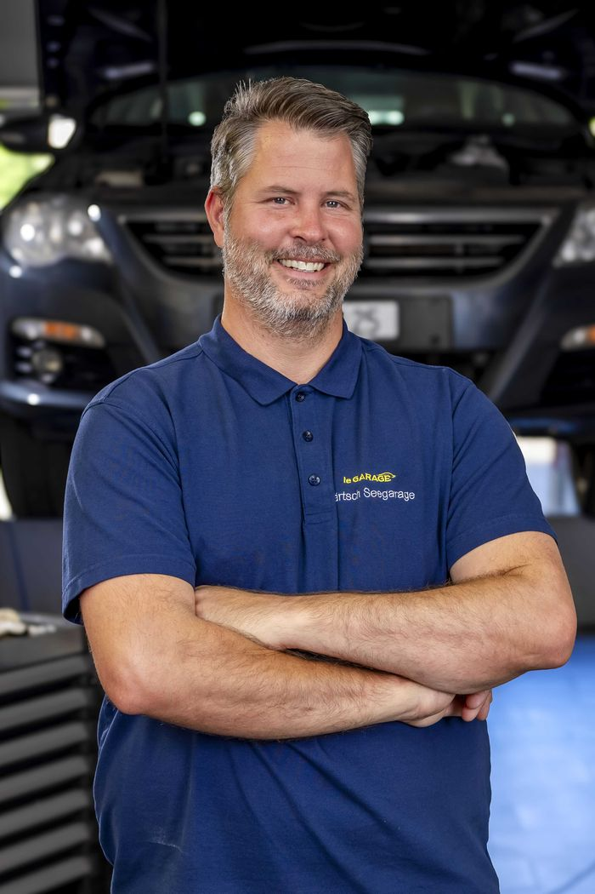
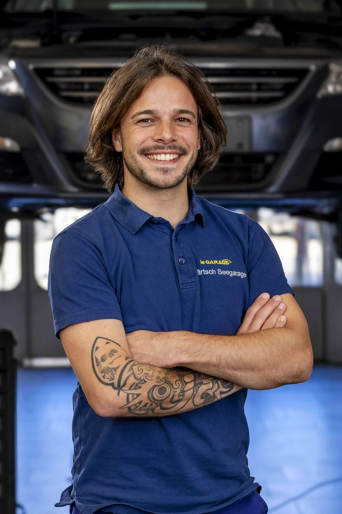
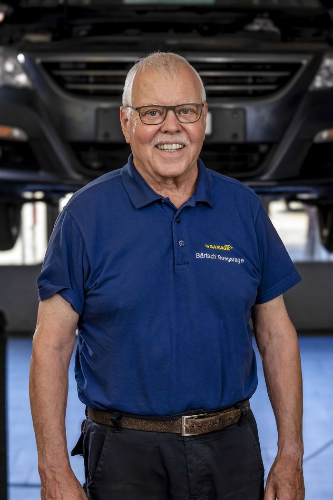

Über uns
Willkommen bei der Seegarage Bärtsch
1978 gründeten die Brüder Kurt und Bruno Bärtsch die Seegarage Bärtsch. Schon früh wurde sie zur Anlaufstelle für viele Autofahrerinnen und Autofahrer in der Region.
Heute führt Rico Bärtsch die Garage in zweiter Generation. Als Inhaber, Werkstattleiter und Automechaniker packt er täglich selbst mit an und hat ein offenes Ohr für die Anliegen seiner Kundschaft.
Heute betreut die Seegarage Bärtsch Fahrzeuge aller Marken: vom regelmässigen Service über Reparaturen bis zu individuellen Lösungen. Über 40 Jahre Erfahrung treffen auf frische Energie.

Wir sind für Sie da
Unser Familienunternehmen ist ein Drei-Mann-Betrieb. Gerne stellen wir uns kurz vor.
Rico Bärtsch
Werkstattleiter und Inhaber

Philip Gertsch
Automobilmechaniker

Kurt Bärtsch
Buchhaltung und Administration
Ihr Servicekontakt
Rufen Sie uns an oder schreiben Sie uns. Sie finden uns an der St. Gallerstrasse 41A in Roggwil TG.